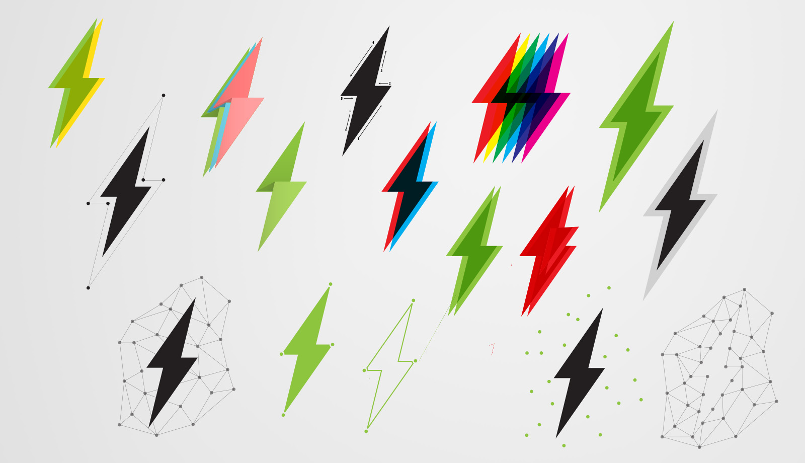
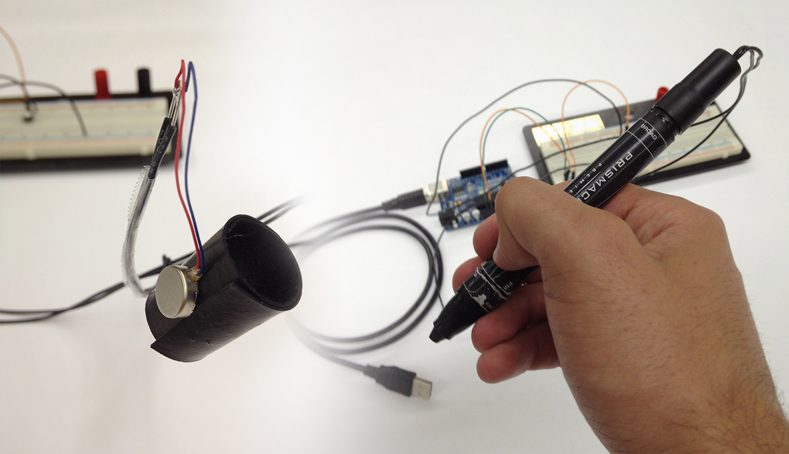
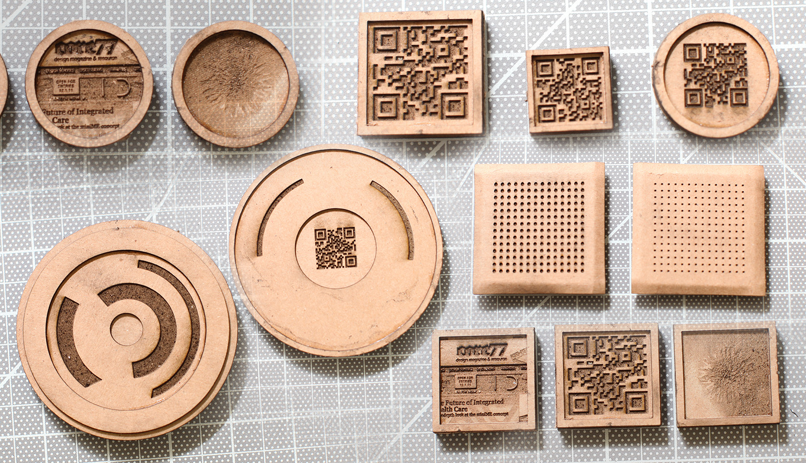

Fuse: Storyboard
Trailer and walkthrough of using Fuse.
Collaborative brainstorming is often nearly impossible.
With Remote Participants
The best solutions today require the use of sticky notes or a whiteboard, and yet all of that completely falls through without being colocated with all of your participants.
In Nontraditional Spaces
Carrying in your own whiteboard into a coffeeshop is both a hassle and an embarrassment. There's really no viable options for brainstorming in a public space.
While Incorporating Digital Content
Sticky notes and drawings are great but printing seems to be the only real option currently for incorporating websites, pictures, spreadsheets, and other digital content.
Missed Sessions
Catch up on meetings you might have missed: play by play. Or, use this historical data to review how, when, and by whom an idea was created.
Fuse is a smart stylus and app ecosystem that bridges the gap between you and others using the devices you already own: a tablet and a smartphone.

Adaptable
The software runs on both android and iOS so the stylus is all you need to get going. Over 50% of mobile users carry smartphones so just throw a tablet into the mix and you're good to go.

Go Anywhere
Get away from the whiteboards and meeting spaces and work anywhere you want with whomever you want, even if they're across the country; you and your ideas can stay connected in real time via the net.
Review Session History
Missed the meeting? You're lucky if a picture was taken at the end, but there's no simple way for seeing what all was said and which ideas lived and died during the process.
Your tablet acts as a window into your new shared virtual space and each participant uses his or her phone to create content, be it links, drawings, writing, photos, or anything you can copy and paste.


The pen itself accomplishes the "bridging" by smartly incorporating bluetooth and accelerometer chips both to transfer the data as well as to distinguish between users for the sake of the session history and remote participants.
The project started out as a means of integrating digital content into the physical, whiteboard-ruled world. But, as time progressed, a mobile solution pivot became the clear choice.


- 
From there, I prototyped solutions for the simultaneous needs of minimizing the amount of things people need to buy and carry, minimizing the options for the product given to the consumer, and minimizing the need for real-estate screen-wise.
- 

- 
It was through this process of physically prototyping that the three-part system was distilled. Using the same screen for both creation and organization would have been less usable and have slowed down people in a multi-user context, the primary context for brainstorming in most situations.
Brainstorming sessions require an eclectic mix of thoughts, content, and resources, and are inherently multi-modal experiences. It's only through a tangible device such as Fuse that we can hope bridge this gap in the experience.